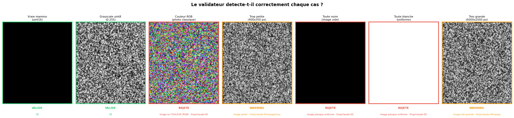
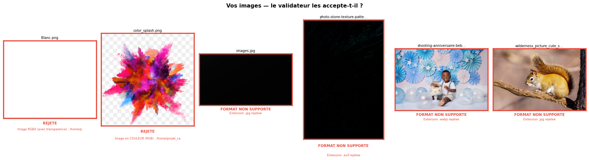

============================= test session starts ==============================
platform linux -- Python 3.12.3, pytest-9.0.3, pluggy-1.6.0 -- /home/projet_cancer_sein/.venv/bin/python
cachedir: .pytest_cache
rootdir: /home/projet_cancer_sein
configfile: pyproject.toml
collecting ... collected 14 items
scripts/test_validate_input.py::TestCSV::test_valid_csv PASSED [ 7%]
scripts/test_validate_input.py::TestCSV::test_missing_csv PASSED [ 14%]
scripts/test_validate_input.py::TestCSV::test_csv_is_a_directory PASSED [ 21%]
scripts/test_validate_input.py::TestCSV::test_missing_columns PASSED [ 28%]
scripts/test_validate_input.py::TestCSV::test_invalid_laterality PASSED [ 35%]
scripts/test_validate_input.py::TestCSV::test_invalid_view PASSED [ 42%]
scripts/test_validate_input.py::TestImages::test_valid_grayscale PASSED [ 50%]
scripts/test_validate_input.py::TestImages::test_rgb_image_rejected PASSED [ 57%]
scripts/test_validate_input.py::TestImages::test_tiny_image_warns PASSED [ 64%]
scripts/test_validate_input.py::TestImages::test_black_image_rejected PASSED [ 71%]
scripts/test_validate_input.py::TestImages::test_corrupted_file PASSED [ 78%]
scripts/test_validate_input.py::TestImages::test_white_image_rejected PASSED [ 85%]
scripts/test_validate_input.py::TestImages::test_large_image_warns PASSED [ 92%]
scripts/test_validate_input.py::TestImages::test_uint8_valid PASSED [100%]
============================== 14 passed in 1.38s ==============================
Rapport de validation — tests et donnees
Ce que verifie le pipeline avant de toucher a vos images
Ce notebook couvre deux questions independantes :
- Le validateur fonctionne-t-il ? — Tests unitaires sur des images synthetiques, l’equivalent de
make test. - Mes donnees sont-elles pretes ? — Validation de vraies images depuis
data/raw/test_images/, l’equivalent demake validate.
Partie 1 — Tests unitaires
Ce que teste make test
make test lance pytest scripts/test_validate_input.py sur deux fonctions de scripts/validate_input.py : check_csv() et check_image(). Chaque test fabrique une situation problematique precise et verifie que le validateur la detecte.
Resultat pytest
Tests CSV — ce qui est verifie
check_csv() lit votre train.csv et controle quatre points :
# validate_input.py · lignes 99–125
missing = EXPECTED_CSV_COLS - columns # colonnes obligatoires presentes ?
bad_lat = set(df["laterality"]) - {"L","R"} # lateralite = L ou R uniquement
bad_view = set(df["view"]) - {"CC","MLO"} # vue = CC ou MLO uniquement
cancer_vals.issubset({0, 1}) # label cancer = 0 ou 1 uniquement| Test | Situation simulee | Resultat attendu |
|---|---|---|
test_valid_csv |
CSV correct, 8 lignes, toutes colonnes | passed=True |
test_missing_csv |
Chemin inexistant | Erreur « introuvable » |
test_csv_is_a_directory |
Un dossier nomme train.csv |
Erreur « dossier » |
test_missing_columns |
Seulement patient_id et image_id |
Erreur « Colonnes manquantes » |
test_invalid_laterality |
Valeur Left au lieu de L |
Erreur « Lateralites invalides » |
test_invalid_view |
Valeur XRAY au lieu de CC/MLO |
Erreur « Vues invalides » |
Tests images — ce qui est verifie
check_image() applique trois criteres sur chaque image :
# validate_input.py · lignes 168–208
if img.shape[2] == 3: # couleur RGB → rejet immediat
if h < 700 or w < 700: # trop petite → warning (pipeline continue)
if max(h, w) > 5000: # tres grande → warning
if (pmax - pmin) < 50: # uniforme (noire/blanche) → rejet (image corrompue)Les seuils (
MIN_IMAGE_SIZE=700,MIN_PIXEL_RANGE=50,VERY_LARGE_DIM=5000) sont definis aux lignes 25–27 devalidate_input.py— modifiables si besoin.

| Test | Situation simulee | Resultat attendu |
|---|---|---|
test_valid_grayscale |
Vraie mammographie uint16 | Valide |
test_uint8_valid |
PNG 3000x2000 uint8 | Valide |
test_rgb_image_rejected |
Image couleur RGB | Erreur « COULEUR » |
test_tiny_image_warns |
PNG 400x350 px | Warning « petite » |
test_black_image_rejected |
PNG entierement noir | Erreur « uniforme » |
test_white_image_rejected |
PNG entierement blanc | Erreur « uniforme » |
test_large_image_warns |
PNG 6000x2000 | Warning « grande » |
test_corrupted_file |
Fichier .png contenant du texte |
Erreur « illisible » |
Partie 2 — Validation de vraies images
Ce que fait make validate
make validate INPUT_DIR=... appelle check_csv() puis check_images() sur vos vraies donnees. Les images ci-dessous viennent de data/raw/test_images/ — elles simulent ce qu’un utilisateur pourrait soumettre par erreur (photos, screenshots, fichiers web).
# validate_input.py · lignes 230–254
SUPPORTED_FORMATS = (".png", ".dcm", ".dcm.zip")
UNSUPPORTED_FORMATS = (".jpg", ".jpeg", ".webp", ".avif", ...)
# Les formats non supportes sont rejetes avant meme d'ouvrir l'image.
DIAGNOSTIC — data/raw/test_images/
==================================================
Blanc.png [FAIL] Image RGBA (avec transparence) : /home/projet_cancer_sein/data/raw/tes
color_splash.png [FAIL] Image en COULEUR (RGB) : /home/projet_cancer_sein/data/raw/test_images
images.jpg [FAIL] Format non supporte (.jpg)
photo-stone-texture-pattern_58702-16052.avif [FAIL] Format non supporte (.avif)
shooting-anniversaire-bebe-un-an-garcon-decor [FAIL] Format non supporte (.webp)
wilderness_picture_cute_small_squirrel_branch [FAIL] Format non supporte (.jpg)